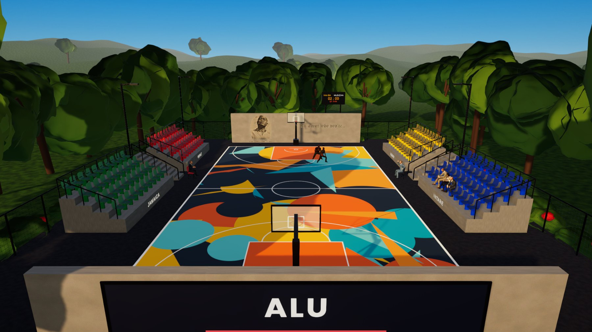
The AIKN basketball court is a well-used outdoor space on campus, but it has nowhere to sit. Players' friends, teammates and visitors stand on bare earth at the edge of the slab. AIKN Courtside adds permanent, safe and colourful seating that turns the court into a small arena for practice, club games and campus events.
The design places four stepped concrete stands, two on each sideline, each with 40 moulded seats in 4 rows. The sections are named Imanzi, Jamaica, Imena and Intare, and each has its own seat colour, so every stand has an identity students can rally behind. Aisle stairs with handrails divide the stands, guardrails protect every raised edge, and new LED floodlights let the court be used safely after dark. The end walls carry carved portraits of Fred Swaniker and H.E. Paul Kagame with their words, and an illuminated ALU / AIKN COURT sign on the outside. The stands are built from durable, locally available materials, reuse the existing slab, and need very little maintenance.
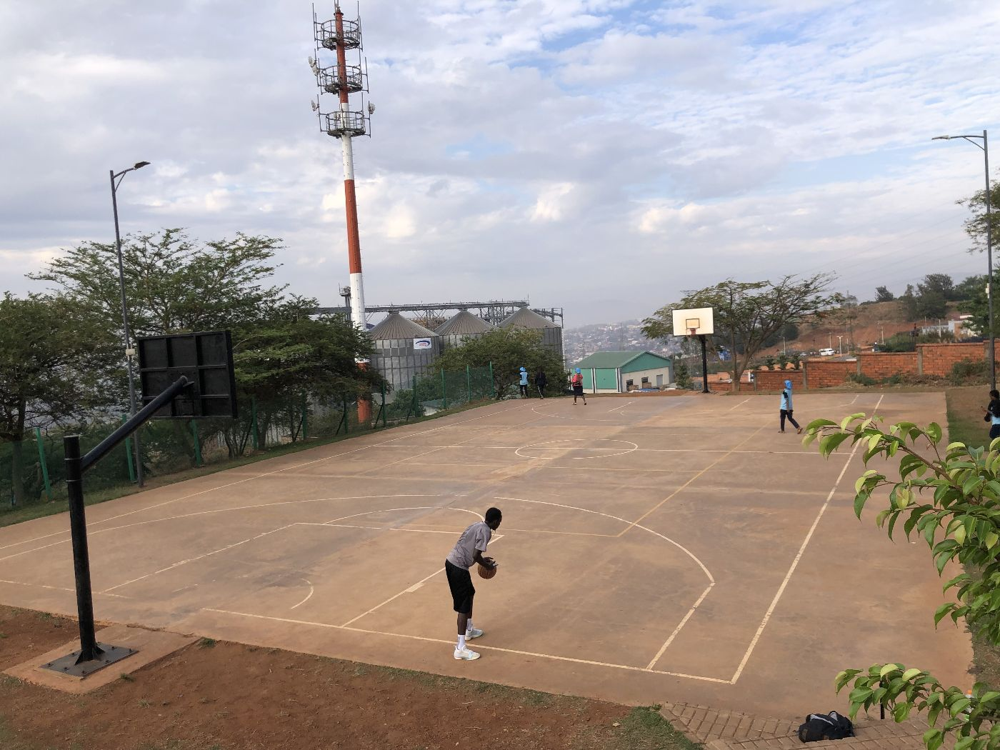
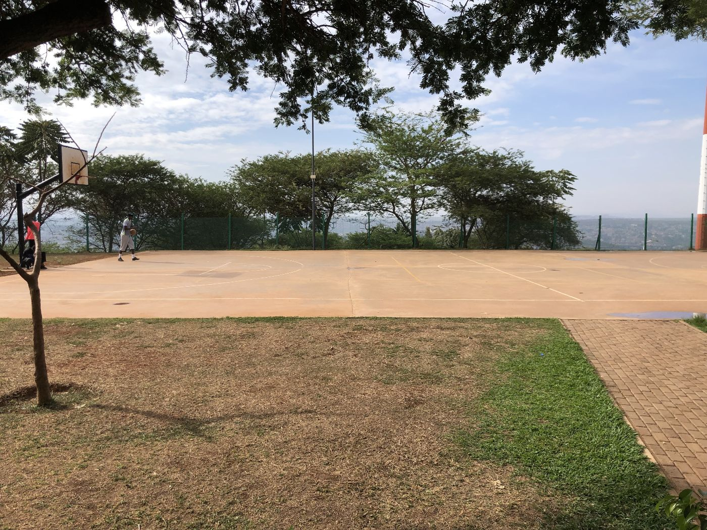
Field visits found a sound but tired court:
Courtside seating should feel like part of the court, not something added beside it. The stands sit 1.8 m outside each sideline so spectators are close to the game, and the stepped rows lift every seat above the one in front for a clear view. A gap of about 3.7 m between the two stands on each side holds the aisle stairs and the team chairs, and keeps sight lines and circulation open at half court.
| Section | Position | Seat colour | Seats |
|---|---|---|---|
| Imanzi | Left side, far end | Red | 40 |
| Jamaica | Left side, near end | Green | 40 |
| Imena | Right side, far end | Yellow | 40 |
| Intare | Right side, near end | Blue | 40 |
Each name is cast into the 0.8 m concrete front face of its stand. The seat colours pick up the court's new geometric mural, so the court and its seating read as one design. Concrete walls behind each basket (15 m × 3.4 m) stop loose balls and give the court a clear edge.
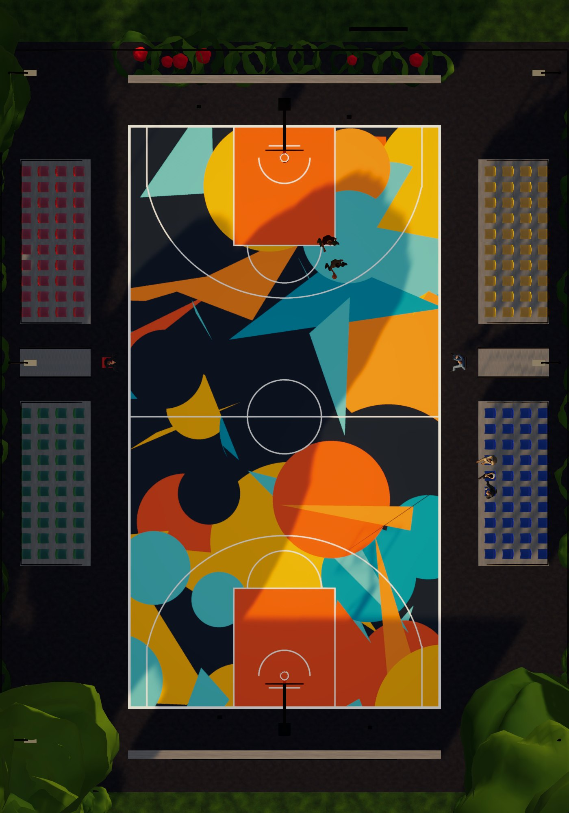
| Element | Dimension |
|---|---|
| Court | 15.0 × 28.0 m (existing slab) |
| Stand position | Front face 1.8 m outside the sideline |
| Stand length | 7.9 m per section (10 seats at 0.75 m centres) |
| Stand depth | 3.4 m (4 rows × 0.85 m) |
| Rows | 0.85 m tread, 0.40 m rise; first row 0.80 m above ground |
| Top tier | 2.00 m above ground, with a 1.10 m guardrail |
| Gap between stands | About 3.7 m (aisle stair 1.4 m wide + circulation) |
| Aisle stairs | 10 steps, 0.20 m rise × 0.34 m going, handrails on both sides |
| End walls | 15.0 × 3.4 × 0.4 m, 2.2 m behind each baseline (to centre) |
| Floodlights | 6 LED luminaires on 7.5 m poles, 3 per side |
| Type | Places |
|---|---|
| Fixed seats | 160 (4 sections × 4 rows × 10) |
| Wheelchair bays | 4 level bays on the apron at the open ends of the stands, 0.9 × 1.4 m each, with a companion seat |
| Team areas | 2 courtside coach / bench positions at half court |
Section A–A through the Intare stand. Dimensions in metres. Indicative; final sizes to be confirmed by a structural engineer.
| Element | Material | Why |
|---|---|---|
| Stand structure | 200 mm concrete-block perimeter and riser walls on reinforced strip footings; compacted fill (excavated soil/murram) inside; 125 mm reinforced-concrete treads (C25/30, mesh-reinforced) | Strong and low-maintenance, built with skills and materials found in Kigali. Filling the core with soil uses far less cement than solid concrete. |
| Tread finish | Broom-finished concrete, 1:100 fall to the rear, 50 mm yellow anti-slip nosing strip on every step edge | Grip in wet weather; edges are visible in low light; rain drains away from seats. |
| Seats | Moulded polypropylene/HDPE stadium shell seats, UV-stabilised and colour-fast, with drain holes; mounted on hot-dip galvanised steel brackets with stainless-steel anchors | Weatherproof, comfortable, quick to dry; each seat can be replaced on its own. Recycled-content options are available. |
| Handrails and guardrails | 48 mm hot-dip galvanised steel tube, powder-coated black; welded-mesh infill panels on guardrails | Rust-resistant for decades; the mesh stops children slipping through. |
| Section names | Letters cast into or stencilled on the concrete front face, sealed | Cannot be peeled off or stolen; the identity stays. |
| End walls | Rendered concrete block, 3.4 m high, anti-graffiti sealer | Ball stop and wind break; a surface for future murals. |
| Court surface | Crack repair and an acrylic sports coating in the geometric colour scheme, with new lines | Renews the existing slab instead of replacing it. |
| Lighting | 6 LED floodlights with asymmetric optics on 7.5 m galvanised poles; timer switching | Even light (target ≈200 lux for recreational play) with little glare or spill; low energy use. |
The stands are simple, robust masonry and concrete work that a local contractor can build in about 8–10 weeks, alongside ALU Facilities. Building one side at a time keeps part of the area usable for as long as possible.
The timeline is indicative and depends on contractor availability, weather (avoiding the heaviest rainy weeks for concrete work) and approvals. Students can help with the mural, section names and planting, so they share ownership of the result.
The two 15 m end walls behind the baskets give the court its identity. The side facing the court carries carved relief art; the outside face carries an illuminated ALU sign seen from the paths around the court.
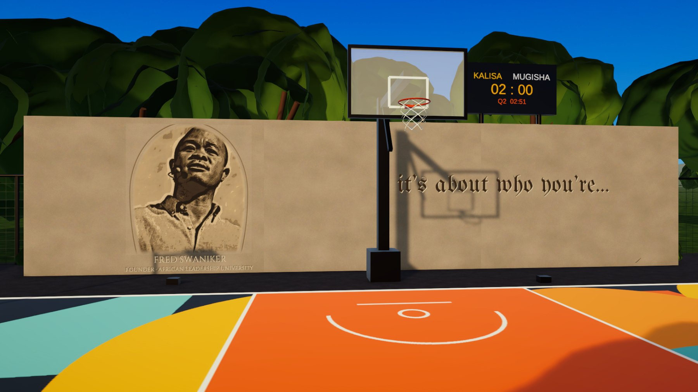
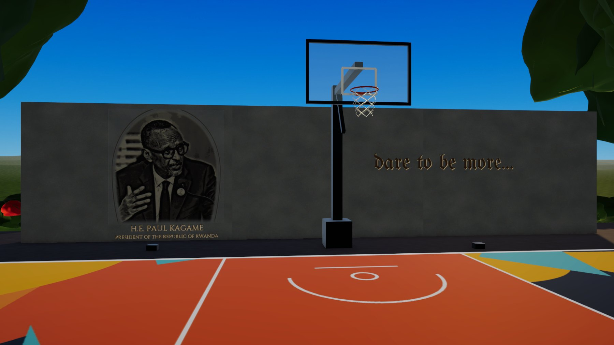
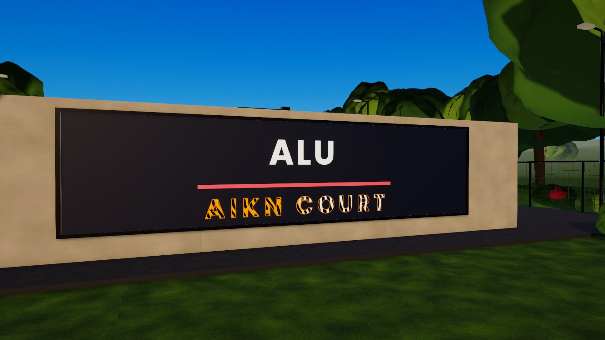
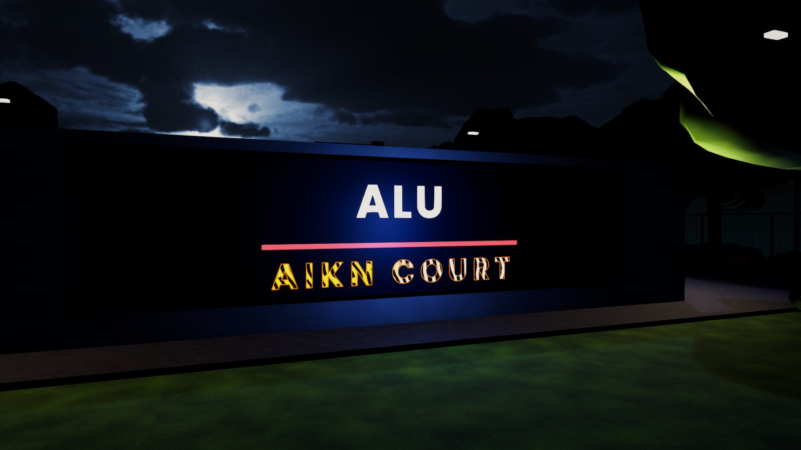
| Element | How it is made |
|---|---|
| Portraits | Relief cut into a 25 mm sand-cement render layer using stencils and grinding, sealed with a clear anti-graffiti coat. Two low-glare LED uplights per wall light them after dark. |
| Inscriptions | Blackletter (Gothic) lettering about 0.35 m tall, cut into the render like an engraved stone inscription; names and titles in Roman capitals under each portrait. |
| LED sign | IP65 outdoor LED letter modules set flush in a recessed navy channel in the wall, with a steel frame. "ALU" in white over a red line in ALU's colours; "AIKN COURT" in a tiger-to-zebra stripe pattern. On a timer with the floodlights. |
The portraits and quotes are shown for presentation. Before construction, permission to use the likenesses and the full quotations will be requested from ALU communications and the relevant offices.
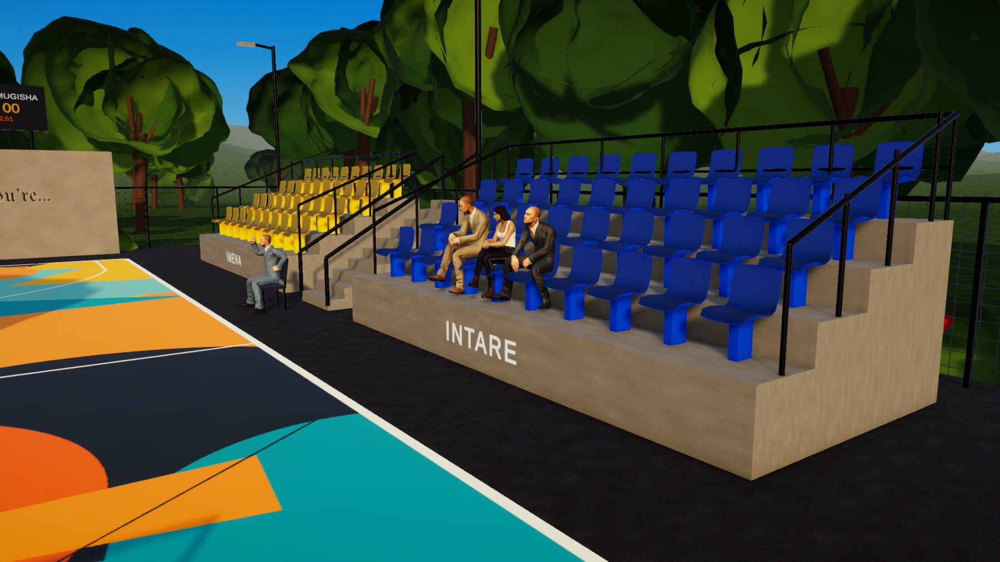
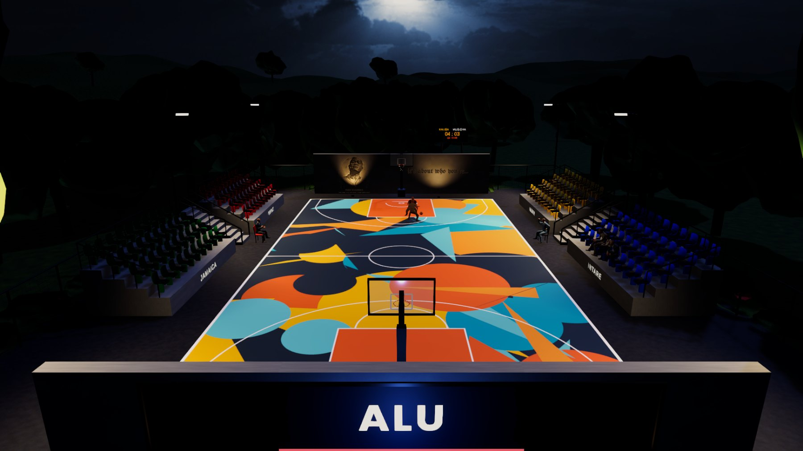
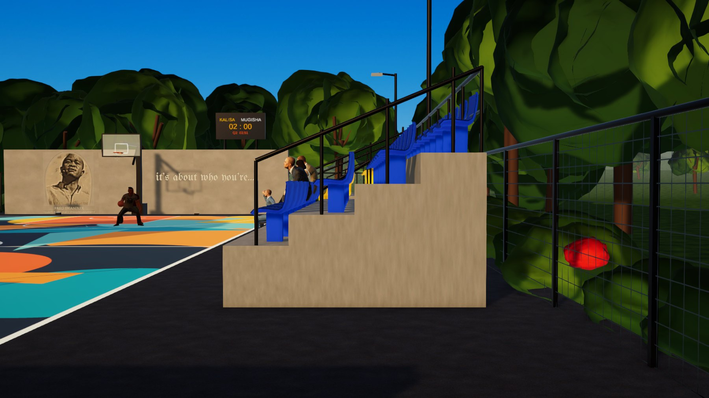
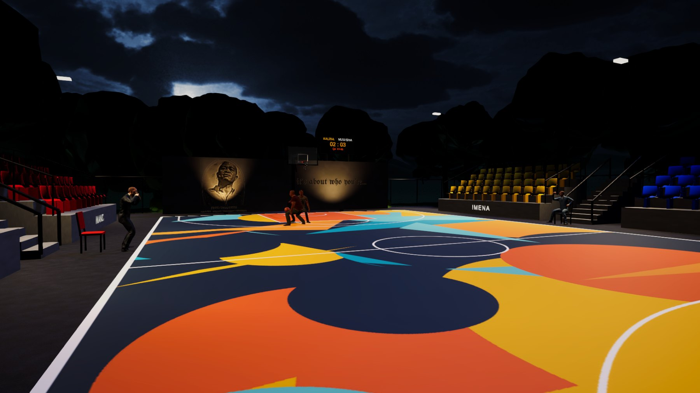
The design was modelled at full scale in Unity 6 (1 unit = 1 m) to test sight lines, step sizes and lighting. The model includes a 90-second voiced story film (an ALU host and two investors touring the court, two student players, two coaches, a narrator, day turning to night as the floodlights and sign switch on) and an interactive mode where visitors can play on the court and switch between day and night. It shows how the court could become a social heart of campus.